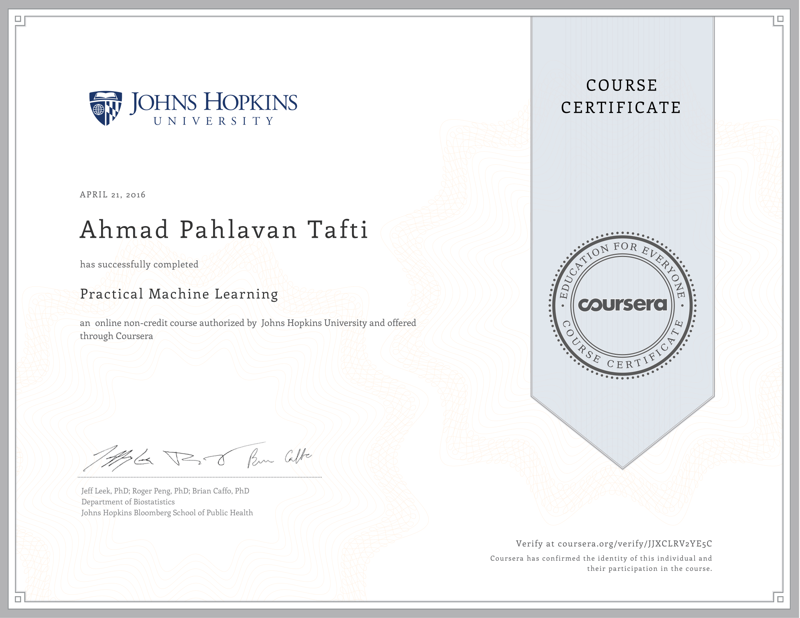
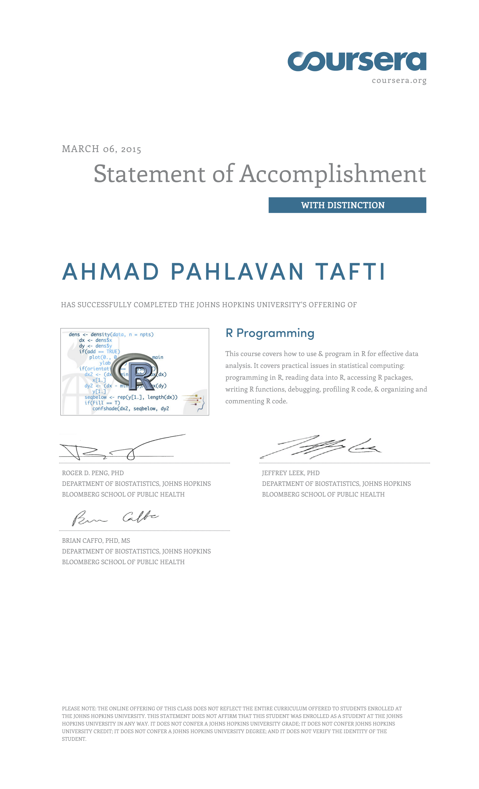
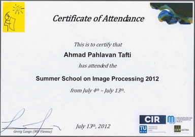
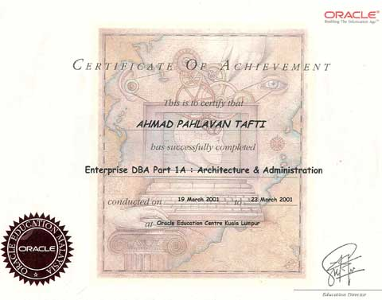
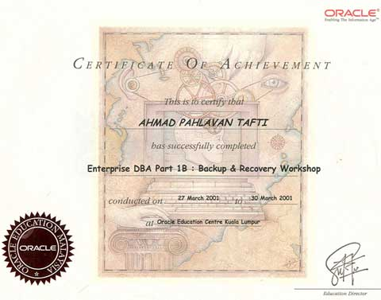

| Biography | | | Education | | | CV | | | Publications | | | Research Projects | | | Book Chapter | | | Photo Gallery | | | Contact |
I have received my BS, M.Sc., and Ph.D. degrees all in Computer Science. Some part of my international studies was carried out at Technical University of Wien, Austria, and Oracle Education Center in KL, Malaysia.
| Ph.D. in Computer Science, University of Wisconsin-Milwaukee, USA, 2016. |
Thesis title: “3D SEM Surface Reconstruction: An Optimized, Adaptive, and Intelligent Approach”.
| Advisor | : | Prof. Zeyun Yu |
| Master in Computer Science, Azad University, Iran and UAE, 2011. |
Thesis title: “Digital image forgery detection through statistical data embedding in spatial domain and cellular automata”.
| Advisor | : | Prof. M. V. Malakooti |
| Bachelor in Computer Science, Azad University, Iran, 1998. |
Thesis title: “Simulation of Basic Computer Architecture”.
| Advisor | : | Prof. M. H. Yaghmaee |
| Coursera |
Practical Machine Learning (Coursera Practical Machine Learning):
Part of the Data Science Specialization course series offered by Johns Hopkins University, USA, 2016.

R Programming (Coursera R Programming):
Part of the Data Science Specialization course series offered by Johns Hopkins University, USA, 2015.

| International Education: Summer School on Image Processing |
Summer School on Image Processing (SSIP 2012):
Medical Image Analysis, Visualization and Retrieval- at Technical University of Vienna and Medical University of Vienna, Vienna, Austria, 2012.

| International Education: Oracle DBA |
Enterprise Oracle DBA Part 1A:
Architecture and Administration- at ORACLE Education Center, KL, Malaysia, 2001.

| International Education: Oracle DBA |
Enterprise Oracle DBA Part 1B:
Backup and Recovery Workshop- at ORACLE Education Center, KL, Malaysia, 2001.

| International Education: Oracle DBA |
Enterprise Oracle DBA Part 2:
Performance Tuning- at ORACLE Education Center, KL, Malaysia, 2001.